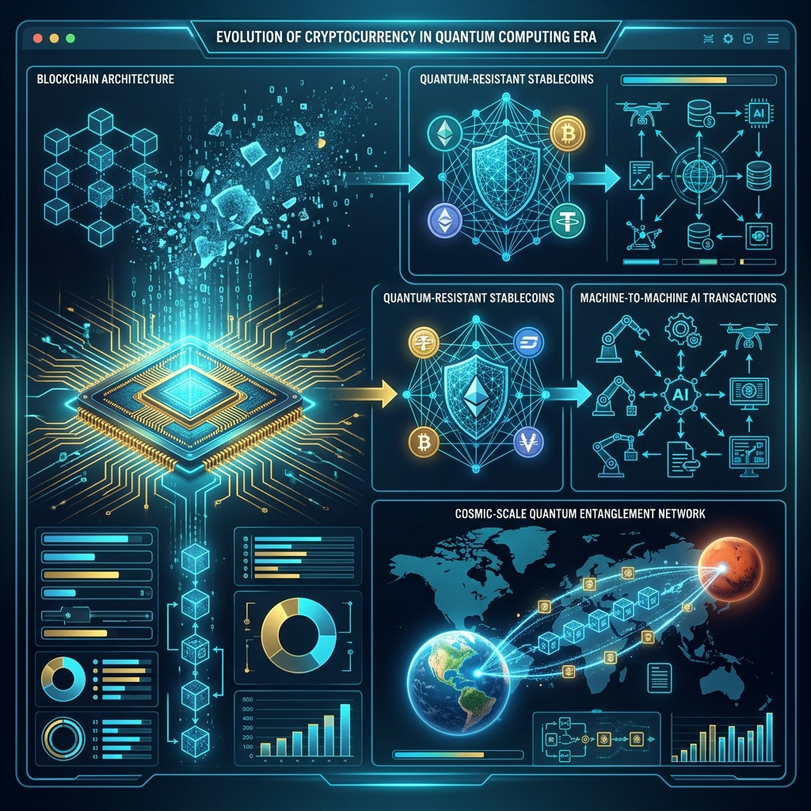
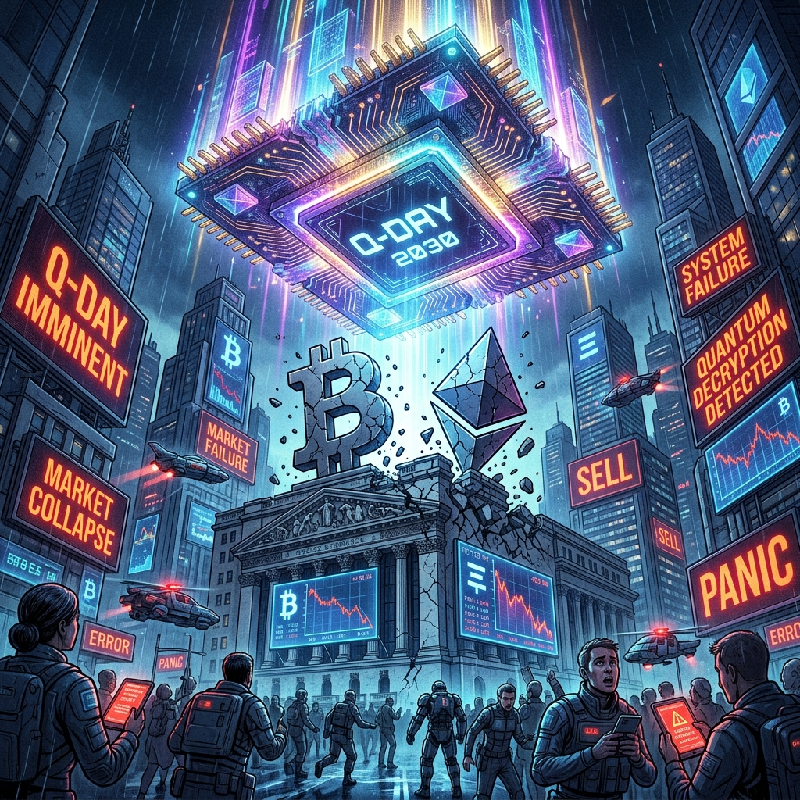
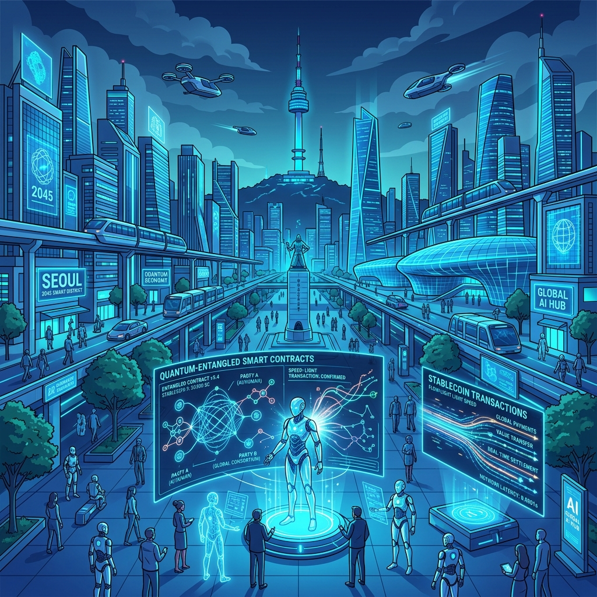
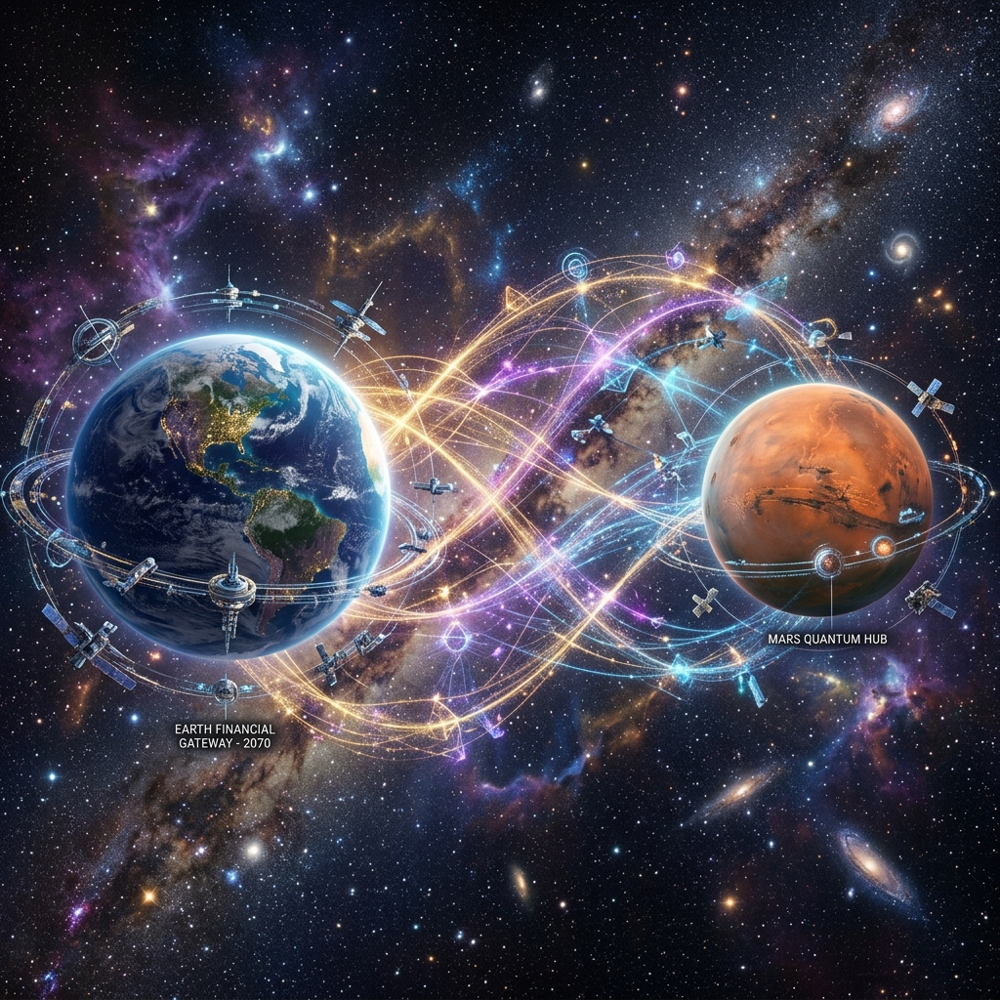
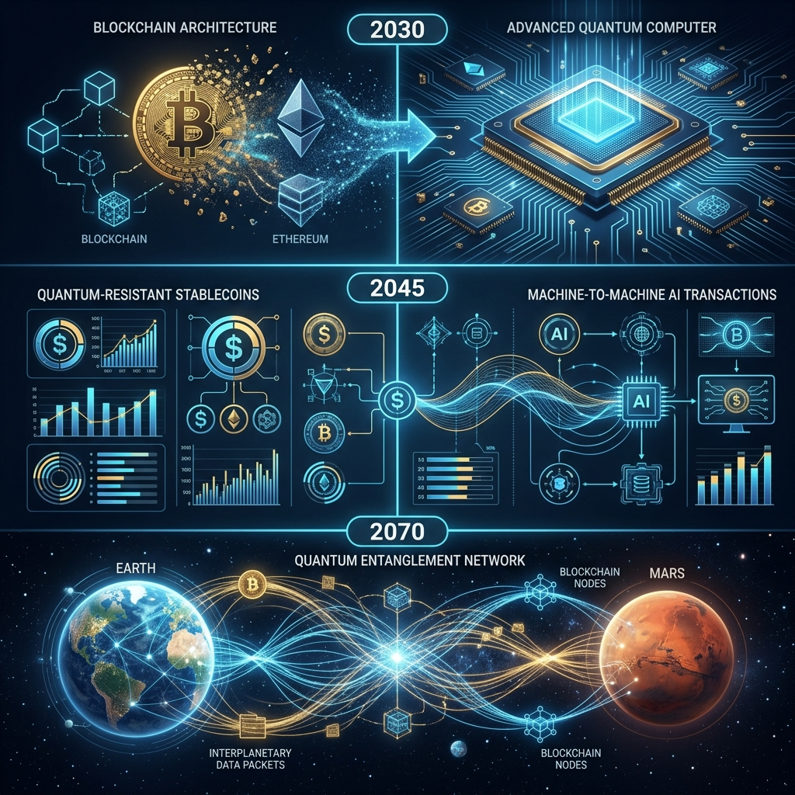

✕
❮
❯
블록체인 탈중앙화의 종식과 다중우주적 금융망

국가 주도 양자 패권 경쟁
강대국들이 양자 안보 위협을 빌미로 사설 암호화폐를 압박하고, 중앙은행 디지털화폐(CBDC) 통제를 대폭 강화한다.
양자 내성 자산으로의 대이동
비트코인이 양자 위협에 노출되면서, 선제적으로 PQC(양자내성암호) 마이그레이션을 완료한 스테이블코인으로 거대한 자본이 이동한다.
신뢰의 양극화
디지털 자산 보관이 '개인의 책임'에서 고비용 다중 서명 기반의 '기관급 수탁(Institutional Custody)'으로 회귀한다.
'Harvest Now, Decrypt Later' 저항: 암호키를 지속 갱신하는 새로운 양자 유목민 문화 탄생.
탈중앙화 허상의 붕괴: 마이그레이션을 위한 강제 하드포크 역설에 직면, '코드가 곧 법'이라는 탈중앙화 근본주의가 무너진다.
양자역학적 비결정론 수용: 큐비트 중첩과 얽힘에 기반한 비결정론적 합의(Quantum Consensus) 알고리즘 도래.
자율 방어 에이전트: 양자 해킹 징후를 실시간 탐지해 안전 자산으로 자동 스왑하는 AI 방어 인프라 정착.



양자 컴퓨팅이 블록체인 트릴레마(확장성, 보안성, 탈중앙화)를 완벽히 해결.
해킹이 차단된 양자 네트워크 위에서 AI 주도의 스마트 컨트랙트가 전 지구적 자원 분배를 최적화하는 글로벌 두뇌 인프라로 진화.
양자 기술을 선점한 국가/빅테크가 구형 블록체인을 학살하며 부를 독점.
해킹 공포에 대중은 개인 지갑을 포기하고 소수 은행 수탁망에 의존, 초기 블록체인 이념은 실패한 실험으로 전락.
비트코인, 이더리움 기반 프로젝트는 2028년 이전까지 특정 암호 알고리즘에 종속되지 않고 언제든 PQC 체계로 모듈을 교체할 수 있는 하이브리드 업그레이드 가능성을 설계해야 한다.
낡은 탈중앙화 이념을 버리고, 위협 시 가장 빠르고 일사불란하게 프로토콜 업그레이드를 이끌어낼 '중앙집중화된 거버넌스' 네트워크에 주목하라.
규제에 순응적인 스테이블코인과 기관 대상 커스터디(Custody)가 미래 암호 자산의 블랙홀이 될 것이다.
"물리학이 코드를 압도하는 시대, 진정한 안전은 고립된 개인 지갑이 아닌 신속한 합의 거버넌스와 진화하는 인프라에 있다."
✅양자컴퓨팅-암호화폐-미래-시나리오.md
